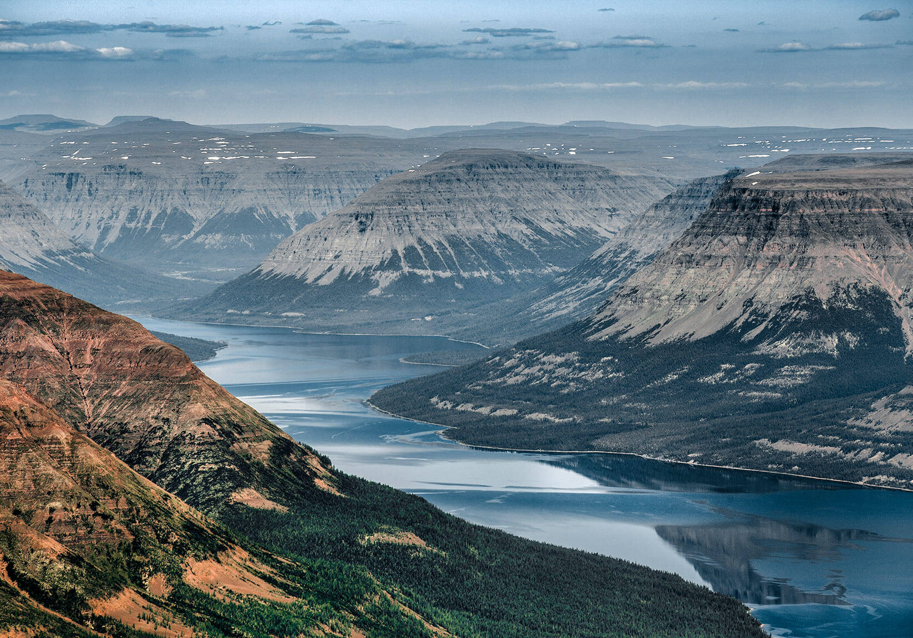

Эвенкия
Эвенкия — историческая область в Центральной и Восточной Сибири, традиционная родина эвенков (тунгусов). Эвенки сформировались как народ ещё в первом тысячелетии нашей эры, занимаясь охотой, рыболовством и оленеводством. Их культура связана с тайгой, шаманизмом и кочевым образом жизни. В XVII веке в эти земли пришли русские первопроходцы. Началось освоение Сибири, установление ясака, возникли первые остроги. В 1930 году был образован Эвенкийский национальный округ в Красноярском крае. В 2007 году Эвенкийский автономный округ был упразднён и объединён с Красноярским краем. Эвенки сохраняют часть традиций — охоту, оленеводство, шаманские обряды, но также включены в современную жизнь России.
